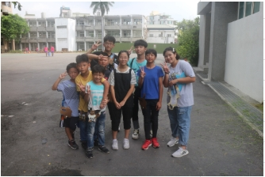
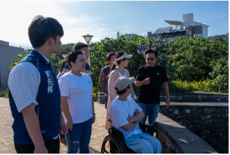
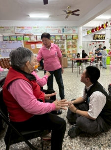
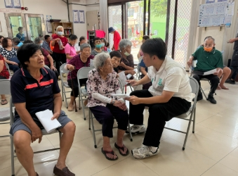
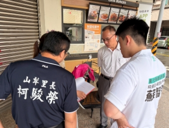
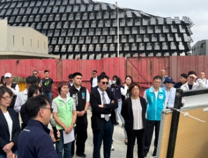
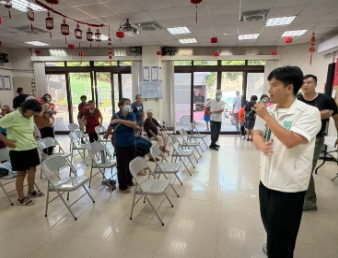

服務和線伸、關懷和線伸,23 歲的行動派,把每一位鄉親的事放在第一位。
我是智弦,一個在嘉犁、詔安、鎮平長大的和美囝仔。從國小的公益服務開始,到冬夏令營、安養院照護與國際志工,「莫忘世上苦人多」不只是諺語,更是我從政的初衷。
大學主修政治,在學期間就進入立法院第一線,先後於立法委員王安祥(和美伸港線西區特助)、廖先翔與張啟楷服務團隊擔任法案助理,累積了「法案研擬」與「選民服務」的實戰經驗——拒絕毒品走私、打擊社群詐騙、科學化交通改革,都是我親身推動過的戰役。
回到故鄉,是因為我對這片土地有著深深的責任感。我要把在中央練就的專業帶回地方,讓彰化不再只是人口外流的縣市,而是能讓長輩安居樂業、讓年輕人敢於實現夢想的家園!讓 20 年不變的和線伸,開始變得不太一樣!




和線伸不是沒有資源,而是資源還沒被真正串聯起來。從家庭到街道,從社區到產業,逐項落實。

宜居
宜業
宜遊八大政策方向,把「專業、理性、務實」帶進地方。
目前年輕人面臨的最重要的議題便是居住權利，有沒有房屋更是現代人選擇成家結婚生子的關鍵條件，然而彰化房價逐漸與台中齊平，導致大多人會選擇機能、交通娛樂相對較方便的台中導致彰化成為10年以來人口外流第二高的縣市，為吸引年輕人及外來人口進入彰化，智弦希望為地方提出五項政策：
彰化尤其和線伸福鹿秀一直以來是傳產的故鄉，而且過去的政策主張出口代工以量制價，但近年人力、土地等成本提高，國際及成本競爭力已經輸給其他發展中國家，且傳產在年輕一輩已經烙印了辛苦、環境較差的代名詞，這導致彰化缺乏新興、金融、觀光產業就業機會，年輕人只能前往台中台北高雄等直轄市謀求出入，為了彰化的未來發展，智弦四項政策：
其實與人民生活息息相關的就是交通，交通壅塞、大眾運輸不方便、走在路上怕被車撞，一直是我們彰化的問題，過去交通發展並不注重人本交通，為了打造一個安全便利的生活環境，不讓鄉親擔心受怕，智弦針對人本交通與大眾運輸有四項作法：
彰化被評選為最無聊的縣市，北彰化沒有電影院、沒有遊樂園，連個商圈都沒有，觀光除了帶動地方經濟，也是讓年輕人願意留在地方的關鍵因素，休憩需求身為政府更應該把關，智弦未來也將監督縣府推動以下政策：
智弦在逐戶拜訪的過程中看到許多身體不便、生活困難的家庭，也聽到許多長輩因行動不便希望能爭取社區接駁的需求，也聽到許多年輕媽媽說托育需求不足、不知道哪裡可以找保母，智弦都有聽到也要落實五項政策，完善我們社會扶持的資源：
教育是孩童生命中成長最重要的一環，好的教育能引導孩子走想適合自己的路，許多學生求學生涯不知道未來學校科系及職場工作環境，對未來感到迷惘，且都市及鄉村資源落差，為了讓彰化的小孩不落後於直轄市，智弦提出四項政策：
這些是我們和美伸港線西一直遇到的問題，但過去至今縣政府並沒有更多積極處理的措施，如和美線西時常發生野狗追逐咬人的狀況，僅清潔隊放置狗籠被動式做法，路邊住宅、空地棄置廢棄物造成病蟲害及空氣汙染，更缺乏跨機關的處理流程，智弦也針對下列問題提出未來建議縣府的改善方法：
114年通過的國土計畫法導致彰化線幾乎全境被列為農業發展區域(農2)，導致現有的工廠、商家面臨無法擴廠甚至違法的情形，台中因是政府大力推動都市計畫，釋出許多住宅、工商用地帶動地方發展，然而和美伸港線西整體都市計畫用地卻微乎其微，在逐戶的過程中許多篇鄉居民更是殷切希望政府可以主導整合土地，推動社區規畫重建住宅，許多古宅更適合做為觀光發展營造用途，為地方發展未來智弦也會監督政府推動都市計畫及地方創生：
蘇智弦服務團隊提供的免費諮詢與服務,有需要隨時聯繫,智弦第一時間前往。


小額捐款、志工募集,每一份心意都是前進的動力。
自行至銀行櫃台或 ATM 完成轉帳。
| 收款銀行 | 中華郵政(700) |
| 劃撥帳號 | 0956751 複製 |
| 他行轉入 | 700001000956751 複製 |
| 戶名 | 115年彰化縣議員擬參選人蘇智弦政治獻金專戶 |
| 銀行帳戶 | 00810110956751 複製 |
企業、社團法人、財團法人與工會等法人組織,可透過以下帳戶完成捐款申報。
| 收款銀行 | 中華郵政(700) |
| 劃撥帳號 | 0956751 複製 |
| 他行轉入 | 700001000956751 複製 |
| 戶名 | 115年彰化縣議員擬參選人蘇智弦政治獻金專戶 |
| 銀行帳戶 | 00810110956751 複製 |
認識和美 ‧ 伸港 ‧ 線西 縣議員參選人 蘇智弦。